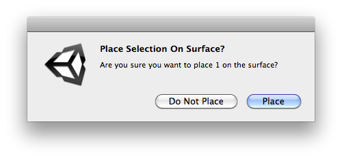

| title | 消息框的名称。 |
| message | 消息的文本。 |
| ok | OK 对话框按钮上显示的标签。 |
| cancel | Cancel 对话框按钮上显示的标签。 |
bool 如果用户单击 OK 按钮，则返回 /true/。否则返回 /false/。
此方法显示模态对话框。
用于在编辑器中显示消息框。ok 和 cancel 是对话框按钮上要显示的标签。如果 cancel 为空（默认），则仅显示
一个按钮。如果按下 ok 按钮，则 DisplayDialog 返回 /true/。
对于可能重复显示的对话框，请考虑使用此方法采用 DialogOptOutDecisionType 的重载，如以下代码示例所示。
另请参阅：DisplayDialogComplex 函数。

此对话框显示的是与表面上放置的对象数量相关的信息。
// Places the selected Objects on the surface of a terrain.
using UnityEngine; using UnityEditor;
public class PlaceSelectionOnSurface : ScriptableObject { [MenuItem("Example/Place Selection On Surface")] static void CreateWizard() { Transform[] transforms = Selection.GetTransforms(SelectionMode.Deep | SelectionMode.ExcludePrefab | SelectionMode.Editable);
if (transforms.Length > 0 && EditorUtility.DisplayDialog("Place Selection On Surface?", "Are you sure you want to place " + transforms.Length + " on the surface?", "Place", "Do Not Place")) { Undo.RecordObjects(transforms, "Place Selection On Surface"); foreach (Transform transform in transforms) { RaycastHit hit; if (Physics.Raycast(transform.position, -Vector3.up, out hit)) { transform.position = hit.point; Vector3 randomized = Random.onUnitSphere; randomized = new Vector3(randomized.x, 0F, randomized.z); transform.rotation = Quaternion.LookRotation(randomized, hit.normal); } } } } }
| title | 消息框的名称。 |
| message | 消息的文本。 |
| ok | OK 对话框按钮上显示的标签。 |
| cancel | Cancel 对话框按钮上显示的标签。 |
| dialogOptOutDecisionType | 用户可以做出的选择退出决策的类型。 |
| dialogOptOutDecisionStorageKey | 用于存储决策的唯一键设置。 |
bool
如果用户单击 ok 按钮，或以前选择不显示，则返回 /true/。如果用户取消或关闭对话框而不做出决策，则返回 /false/。
此方法显示模态对话框，使用户可以选择不再次显示当前对话框。
使用此方法在编辑器中显示可能重复出现的对话框。基于你认为用户遇到此消息的频率，以及希望提醒用户的频率，选择要是使用的 DialogOptOutDecisionType。
如果用户选择不看到与提供的 dialogOptOutDecisionStorageKey 关联的对话框，则 Unity 不显示该对话框，并且此方法会立即返回 /true/。ok 和 cancel 是对话框按钮上显示的标签。如果 cancel 为空，则按钮显示为“Cancel”。这是默认设置。如果用户按下 ok 按钮，则 DisplayDialog 返回 /true/。
如果用户选择不显示对话框，则 Unity 会存储此决策。如果 dialogOptOutDecisionType 设置为 DialogOptOutDecisionType.ForThisMachine，则 Unity 会通过 EditorPrefs.SetBool 存储决策。如果 dialogOptOutDecisionType 设置为 DialogOptOutDecisionType.ForThisSession，则 Unity 会通过 SessionState.SetBool 存储决策。在两种情况下，Unity 都会将决策存储在作为 dialogOptOutDecisionStorageKey 提供的键之下。
如果要让用户可更改存储在 EditorPrefs 中的决策，则可以通过 SettingsProvider 将此内容添加到编辑器偏好设置。
使用 DialogOptOutDecisionType.ForThisSession 可在用户执行可能丢失某些工作的破坏性操作之前显示对话框。如果认为用户看到此对话框的频率可能太高，则可以使用 EditorPrefs，通过 SettingsProvider 向编辑器偏好设置添加选项，并在显示对话框之前查询该设置。
另请参阅：DisplayDialogComplex 函数。
// Places the selected Objects on the surface of a terrain.
using UnityEngine; using UnityEditor; using UnityEngine.UIElements;
public class PlaceSelectionOnSurface : ScriptableObject { const string placeOnSurfaceDialogDecisionKey = "Example.PlaceOnSurfaceDecision"; [MenuItem("Example/Place Selection On Surface")] static void CreateWizard() { Transform[] transforms = Selection.GetTransforms(SelectionMode.Deep | SelectionMode.ExcludePrefab | SelectionMode.Editable);
if (transforms.Length > 0 && EditorUtility.DisplayDialog("Place Selection On Surface?", "Are you sure you want to place " + transforms.Length + " on the surface?", "Place", "Do Not Place", DialogOptOutDecisionType.ForThisMachine, placeOnSurfaceDialogDecisionKey)) { // Register and Undo event so that this action is not only not desctrutive but also easy to revert. // Without Undo, DialogOptOutDecisionType.ForThisSession would be a better fiting decision type. Undo.RecordObjects(transforms, "Place Selection On Surface"); foreach (Transform transform in transforms) { RaycastHit hit; if (Physics.Raycast(transform.position, -Vector3.up, out hit)) { transform.position = hit.point; Vector3 randomized = Random.onUnitSphere; randomized = new Vector3(randomized.x, 0F, randomized.z); transform.rotation = Quaternion.LookRotation(randomized, hit.normal); } } } } }